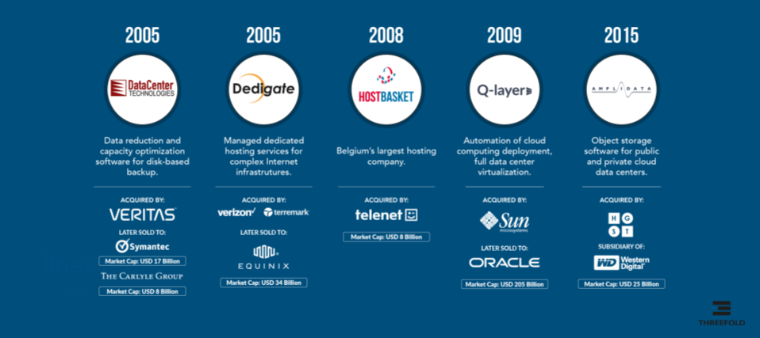

APPENDIX B: The result of 30 years.
OurWorld Venture Creator is the result of 30 years of venture creating experience and incubation.

More than 500.000.000 USD in exits. Average IRR for our investors was above 44% per year.
Technology Achievements of the Founding Team
3 World Records for Web Hosting (1997-2002)
Our team launched the internet hosting and datacenter business in Europe. It's fair to say that we were at the beginning of the internet's enormous growth at that time. We hosted the largest websites in the world at that time including UEFA, Nasa, FIFA World Cup, and more. We demonstrated numerous times how to achieve hyper scale while remaining sustainable.
The first Backup Data Deduplication system in the world (2005)
With Data Center technologies, we achieved up-to 100x energy-efficiency compared to the status quo in the data market at that time. Our solution permitted our customers to back up their full data centers with 100x less storage utilization and therefore energy used as well.
Our product still lives on in all Symantec backup systems. This was a highly innovative solution, there was nothing like it at the time as it facilitated the transition from tape to disk based backup systems.
The first cloud system in the world (2008)
We formed one of the key innovation groups in the field of cloud computing. Concepts like Virtual Private Data Center were invented by us. We were one of the main sources of inspiration for companies like VMWare for their cloud strategy. We became the core of SUN microsystem, and the inspiration behind Sun’s ambition to become the largest player in the cloud industry. This didn’t happen in the end because Oracle bought SUN and buried all Sun’s cloud computing projects.
The first always consistent database in the world (2010)
This was a major technological achievement, we pioneered and developed the method to store data in a database over multiple sites in such a way that data could never be lost, corrupted or order of updates changed. Consistency was key. This database was called Arakoon and served as inspiration for further database projects. This fact is little known but is especially relevant today
The first unbreakable and distributed storage system in the world (2012)
We invented a way to store petabytes of information in such a way that no-one can hack it, and the data can never be corrupted.
This system was 10x more energy efficient compared to any alternative. This led to our biggest exit to date. Even today there are barely any storage systems which can compete with our approach and solutions that were developed at that time.
The first proof of block stake blockchain in the world (2017)
We developed the first blockchain which was not using proof of work to battle the energy usage which went with proof of work blockchains. We have used this system for the last 4 years. Today many blockchains have evolved in this direction.
The first peer-to-peer cloud in the world (now)
Probably our biggest achievement to date. A real carbon removing, sovereign peer-to-peer cloud.This system is being deployed and evolved in one of our scale out startups called ThreeFold.
The benefits of this system are huge. We had to write an operating system from scratch (re-using linux kernel), a new blockchain provisioning layer as well as the most reliable and sustainable storage system in the world. This system has now been deployed in many locations. More than 40m USD has been invested by founders and friends to make this possible.